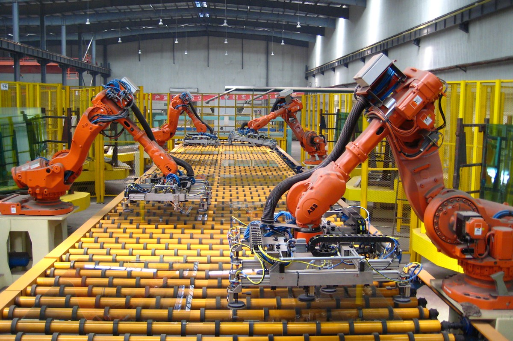
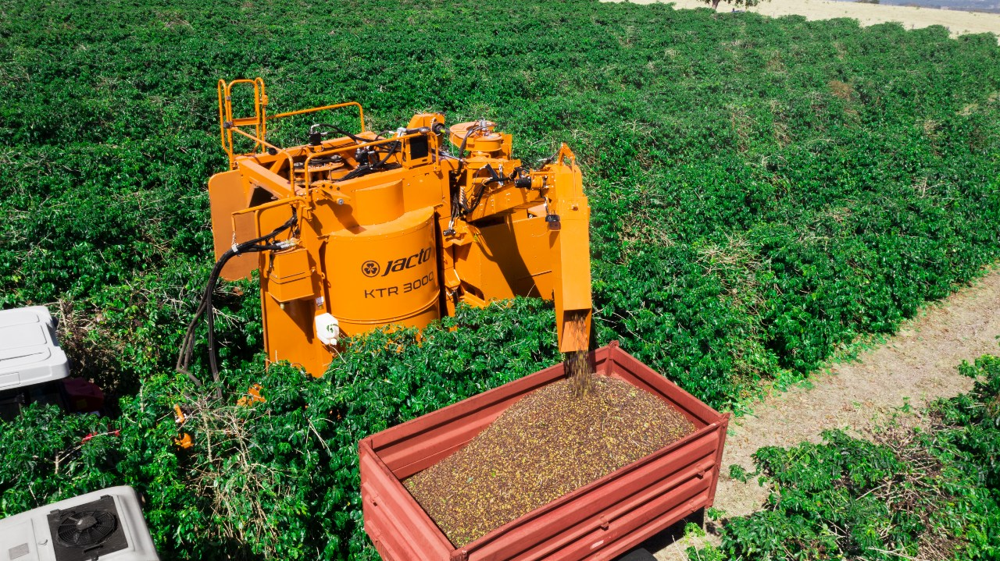

Aplicaciones Actuales de la Robótica
Manufactura
Los robots son utilizados en líneas de producción para realizar tareas repetitivas como ensamblaje, soldadura y pintura, mejorando la eficiencia y reduciendo costos.
Salud

La robótica ha revolucionado el sector de la salud con sistemas de cirugía robótica, como el sistema Da Vinci, que permiten realizar procedimientos con alta precisión.
Exploración Espacial

Robots como el rover Perseverance de la NASA exploran Marte, realizando análisis del terreno y buscando signos de vida pasada.
Agricultura
Los robots son utilizados en la agricultura para tareas como la siembra, monitoreo de cultivos y cosecha, optimizando la producción agrícola.
Entretenimiento
La robótica se ha integrado en la industria del cine y videojuegos, creando personajes animados y experiencias interactivas para el público.